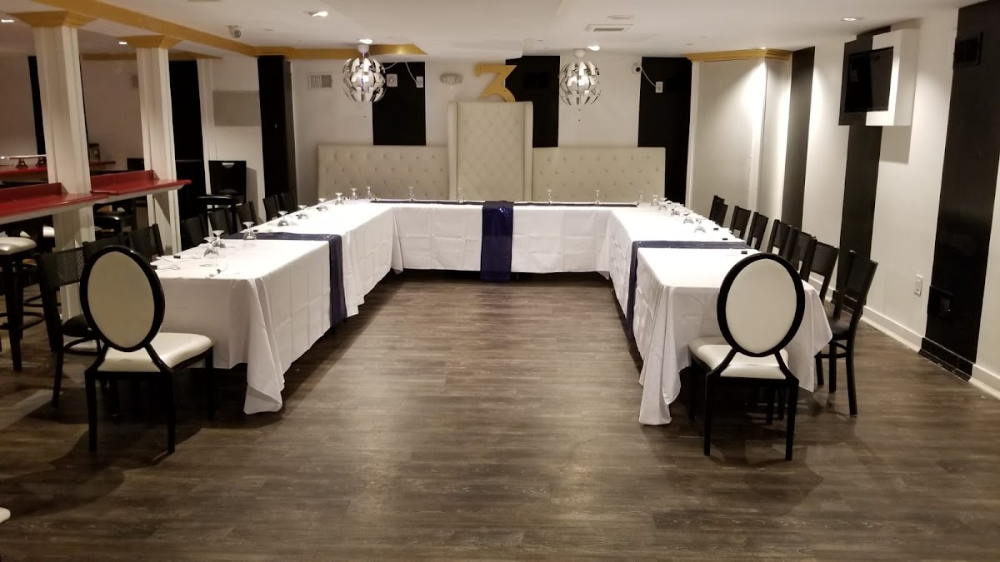
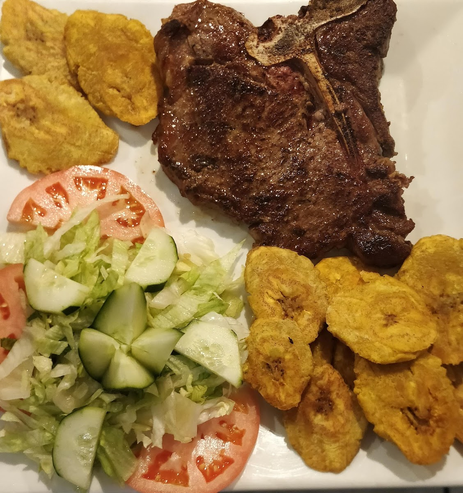
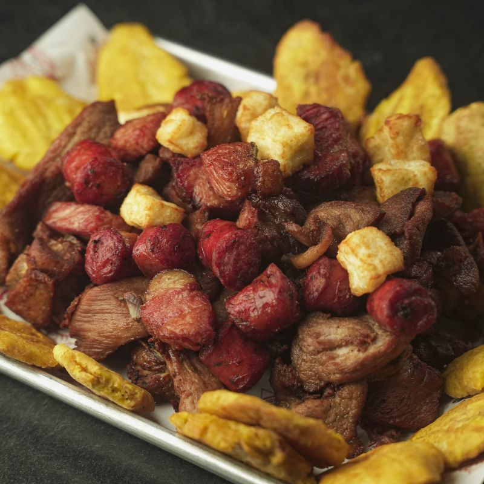
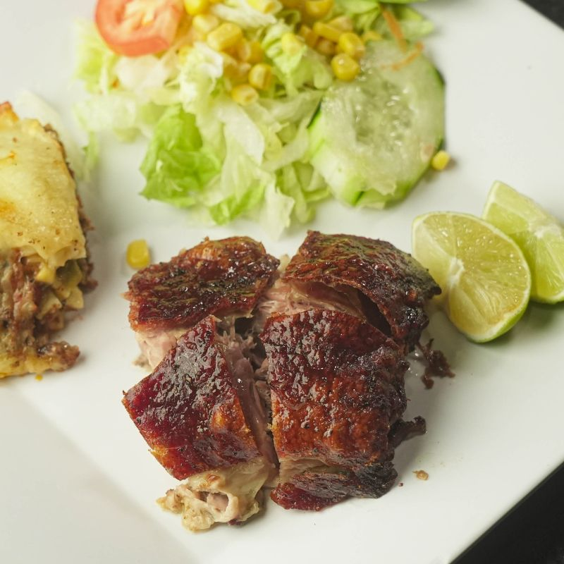
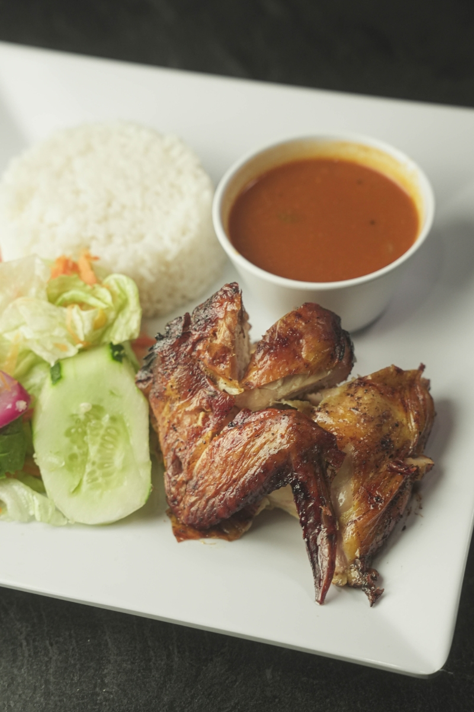
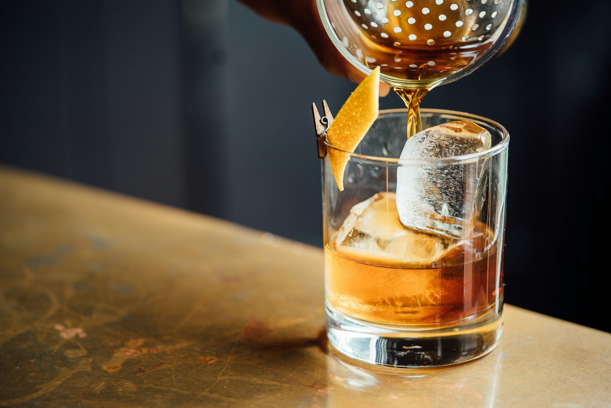

Restaurant
Moro, pernil, mofongo, and the steam-table lunch that New Brunswick grew up on — plated with more ceremony than the usual corner spot.

A Dominican house with four rooms in one: the buffet and the grill, the cocktail bar, the liquor counter, and a floor that stays open after midnight.
On Georges Road, 3 Corner is the rare New Brunswick address that is a restaurant, a bar, a liquor store, and a late grill at once — closer to Santo Domingo nightlife than to a college cafeteria.
Moro, pernil, mofongo, and the steam-table lunch that New Brunswick grew up on — plated with more ceremony than the usual corner spot.
House pours, cold beer, and a counter that turns a weekday dinner into a night. TVs, music, and a room that does not empty at nine.
A true package store inside the dining room. Guests come for the best price on the block — and beer to-go until close.
Churrasco, pechuga a la plancha, salmon, and the picadera boards meant for the table, not just the takeout bag.

3 Corner Restaurant Bar Liquor & Grill sits at 2 Georges Road — a rebuilt corner that now holds a dining room, two bars, package goods, and a downstairs event salon with a gold numeral 3 on the wall.
Neighbors come for plantains with cream and the meat mix platter. Regulars stay because the DJ is already in the booth, the liquor case is stocked, and the kitchen does not close when Rutgers does. Carmen’s up the street and La Cabañita on Elizabeth feed the neighborhood by day. 3 Corner keeps the lights on after midnight.

Chicharrón de pollo, carnita, smoked chop, longaniza, fried cheese, and tostones. Built for the table.
from $18

Roasted pork with yellow rice and pigeon peas — the lunch that still sells out on Georges Road.
$16

Mofongo filled with chicharrón, shrimp on the side. The dish guests dress up for.
$32
Gilbert Cedres said it plainly: buffet, bar, liquor to-go, a seating room with a DJ, and beer you can walk out with until 1 a.m. on weeknights and 2 a.m. on weekends.
That is the 3 Corner difference versus a daytime Dominican lunch counter. Come for the bandera. Stay because the room is still moving.

★★★★★“The flavor, amount and quality of the food was delicious. Pleasantly surprised. Muy bueno.”
Food Whisperer
★★★★★“My favorite spot for Spanish food. Been coming here since the day it opened. Staff go out of their way.”
Hassan Bey
★★★★☆“Plantains with cream are done right and the meat mix platter is so good. Definitely a Dominican spot.”
Nick